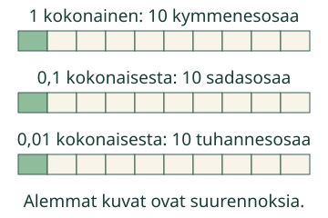
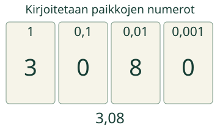
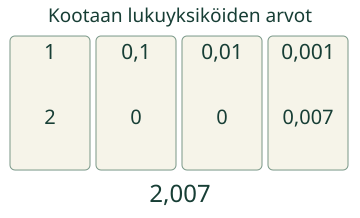

Aavan lapussa on 1,25. Lue, kirjoita ja kokoa sama määrä.
Mitä pieni osa tarkoittaa?
Valitse paperinauha yhdeksi kokonaiseksi. Jaa se 10 yhtä suureen osaan. Yksi on 0,1. Jaa tällainen osa taas 10 osaan: yksi on 0,01. Vielä yksi jako kymmeneen antaa 0,001 alkuperäisestä nauhasta.

Kolme kokonaista ja kahdeksan sadasosaa
3,08 =3 + 0,08. Kymmenesosia ei ole, joten niiden kohdalle tulee 0. Lue myös pilkun paikat.3,8 tarkoittaisi kolmea kokonaista ja kahdeksaa kymmenesosaa: eri määrä.

Myös tuhannesosat mukaan
2,007 =2 + 0 + 0 + 0,007. Kaksi kokonaista ja seitsemän tuhannesosaa.2,07 olisi seitsemän sadasosaa kahden kokonaisen lisäksi.

Ennakoi: tarkoittavatko 0,60 ja 0,6 samaa määrää?
Katso ajatus
Kyllä.6 kymmenesosaa on 60 sadasosaa. Koko alkuperäinen nauha on molemmissa sama.0,06 olisi vain 6 sadasosaa.
Osiin saa jakaa eri tavoilla
1,25 =1 + 0,2 + 0,05. Myös 12 kymmenesosaa ja 5 sadasosaa on 1,25. Jokaisen osan arvo ratkaisee, ei pelkkä osien lukumäärä.
Lisätutkimus ja paperilla
Tee saman luvun kaksi numerolappua ja kaksi erilaista osiinjakoa. Esimerkiksi 0,5 voi olla 5 kymmenesosaa tai 50 sadasosaa. Piirrä samaan alkuperäiseen nauhaan kumpikin. Näytä pari toiselle ilman ratkaisuja. Mikä ei muutu?
Lopuksi: miten erotat luvut 2,007 ja 2,07? Miten kirjoitat kummankin osina?
Opettajalle: integraatio ja rajat
Luokat 3–6. Frozen integration-rooli ja required AND: M-DEC-READ, M-DEC-WRITE ja M-DEC-DECOMPOSE. Tehtävä yhdistää kirjoitetun lukuyksikkökielen merkityksen tunnistamisen lukukortista sekä numeromerkinnän ja osiinjaon tuottamisen. Lukukortin valinta ei ole itsenäinen suullisen lukemisen mittaus. Ei puheentunnistusta tai puheen vahvistamista. Lähde-Liten M-DEC-04 opettaa sen sijaan vertailua: ero dokumentoitu yhteensovituksessa, ei graafiin tai Liteen tehtyä muutosta.
Yksi alkuperäinen nauha on kokonainen. Samanmittaiset nimikkolaput edustavat eri arvoja, eivät toistensa fyysisiä pinta-aloja. Suurennokset nimetään. Nauhan 2,045 m on annettu lukema: yksi kokonainen tarkoittaa yhtä metriä. Ei ruudulta mittaamista tai fyysisen mittaamistaidon väitettä.
Tuki säilyttää tavoitteen. Numeerinen vastaus hyväksyy täsmällisesti samanarvoiset 0–9,999 muodot; tuhannesosaa pienempää erisuuruista arvoa ei hyväksytä, loppunollat käyvät. Lukuyksiköiden määrät 0–9999 ovat kokonaislukuja; kaikki saman määrän ei-negatiiviset osiinjaot hyväksytään, myös epätavalliset. Valmiiden lukukorttien kaikki samanarvoiset vaihtoehdot hyväksytään. Tyhjä, tuntematon tai pyöristystä vaativa arvo ei kelpaa.
Reaaliaikainen oma osasumma ja malli ovat apua. Paikallinen yhteensopivuuspalaute ei luo integraation formaalia masteryä, atomisten esitaitojen tilaa, henkilö- tai muistamishistoriaa eikä itsenäisyys-/vaikuttavuusväitettä. Aikuinen voi lukea ohjeet ja pyytää muualla oppijan omia selityksiä.